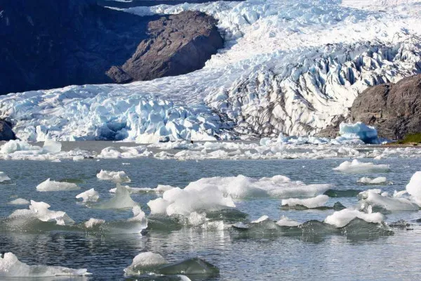

Aquecimento Global
O aquecimento global refere-se ao aumento anormal da temperatura média do planeta registrado nas últimas décadas. Esse fenômeno é associado principalmente às ações antrópicas.

O aquecimento global designa o aumento das temperaturas médias do planeta ao longo dos últimos tempos, o que, em tese, é causado pelas práticas humanas. embora existam discordâncias quanto a isso no campo científico. A principal causa desse problema climático que afeta todo o planeta é a intensificação do efeito estufa, fenômeno natural responsável pela manutenção do calor na Terra e que vem apresentando uma maior intensidade em razão da poluição do ar resultante das práticas humanas. Sob o ponto de vista oficial, o principal órgão responsável pela sistematização e divulgação de estudos relacionados com o aquecimento global é o Painel Intergovernamental sobre Mudanças Climáticas (IPCC). Para o IPCC, o problema em questão não deve sequer ser motivo de discussão em termos de sua existência ou não, pois, segundo ele, é mais do que comprovada a série de mudanças climáticas ocorridas nos últimos tempos e a participação do ser humano nesse processo.Dados levantados por cientistas vinculados ao IPCC afirmam que o século XX, em razão dos desdobramentos ambientais das Revoluções Industriais, foi o período mais quente da história desde o término da última glaciação, com um aumento médio de 0,7 ºC nas temperaturas de todo o planeta. Ainda segundo o órgão, as previsões para o século XXI não são nada animadoras, pois haverá a elevação de mais 1 ºC, em caso de preservação da atmosfera, ou de 1,8 ºC a 4 ºC, em um cenário mais pessimista e que apresente maior poluição.
Causas do aquecimento global

As principais causas do aquecimento global estão relacionadas, para a maioria dos cientistas, com as práticas humanas realizadas de maneira não sustentável, ou seja, sem garantir a existência dos recursos e do meio ambiente para as gerações futuras. Assim, formas de degradação ao meio natural, como a poluição, as queimadas e o desmatamento, estariam na lista dos principais elementos causadores desse problema climático. O desmatamento das áreas naturais contribui para o aquecimento global no sentido de promover um desequilíbrio climático decorrente da remoção da vegetação, que tem como função o controle das temperaturas e dos regimes de chuva. A Floresta Amazônica, por exemplo, é uma grande fornecedora de umidade para a atmosfera, provendo um maior controle das temperaturas e uma certa frequência de chuvas para boa parte do continente sul-americano, conforme estudos relacionados com os chamados rios voadores. Se considerarmos essa dinâmica em termos mundiais, pode-se concluir que a remoção das florestas contribui para o aumento das médias térmicas e para a redução dos índices de pluviosidade em vários lugares."
Consequências do aquecimento global
"Os efeitos do aquecimento global são diversos e podem estar relacionados com a atmosfera, hidrosfera e também com a biosfera. Podemos citar como consequência do aquecimento global, primeiramente, o fenômeno do degelo que vem ocorrendo nas calotas polares. Com isso, a área de várias espécies animais, sobretudo no Ártico, está ficando cada vez mais diminuta, o que acarreta problemas ambientais de ordem ecológica. Além disso, para muitos estudiosos, isso vem causando a elevação do nível dos oceanos, embora esse fenômeno esteja mais associado ao degelo que ocorre na Antártida e também na Groenlândia. Outro efeito ainda mais latente é o aumento das temperaturas, conforme já mencionado. Muitas espécies podem entrar em extinção, além de a disponibilidade de água em várias partes do globo tornar-se cada vez menor em razão da maior ocorrência de secas em períodos mais prolongados. Esse tipo de situação prejudica a oferta de recursos naturais para os seres vivos e a manutenção da cadeia alimentar. Com o aquecimento global, fenômenos cíclicos e anomalias climáticas vêm tornando-se cada vez mais frequentes, tais como o El Niño, que, entre outras consequências, proporciona secas severas em muitas regiões do globo."
Aquecimento global e o efeito estufa

O efeito estufa é um fenômeno de ordem natural capaz de garantir que a Terra seja habitável. Isso acontece porque ele é responsável por manter a temperatura média do planeta, evitando que o calor seja totalmente irradiado de volta ao espaço. Dessa forma, não há grandes amplitudes térmicas (variações de temperatura) entre a noite e o dia. A energia solar que chega até a superfície terrestre emitida pelos raios solares é absorvida em grande parte e logo irradiada de volta ao espaço. Quando esse calor volta ao espaço, os gases presentes na atmosfera impedem que todo esse calor seja dispersado, garantindo então que a temperatura média da Terra não se abaixe drasticamente. Os gases responsáveis pelo efeito estufa são vapor d'água, clorofluorcarbono (CFC), ozônio, metano, dióxido de carbono e óxido nitroso. Contudo, a concentração desses gases, principalmente o dióxido de carbono, aumentou significativamente na atmosfera nas últimas décadas. A emissão desses gases é proveniente principalmente da ação antrópica."